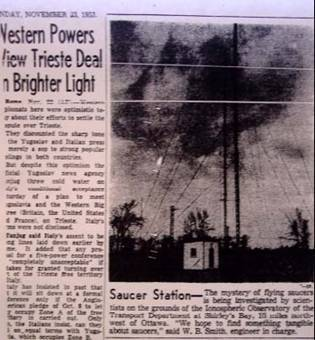

dimanche 21 novembre 1953
|  |
The mystery of flying saucers is being investigated by Canadian scientists on the grounds of the ionospheric
observatory of the Transport Department at Shirley's Bay, 10 miles northwest of Ottawa.
"We hope to find something tangible about saucers
," said W.
B. Smith, engineer in charge.